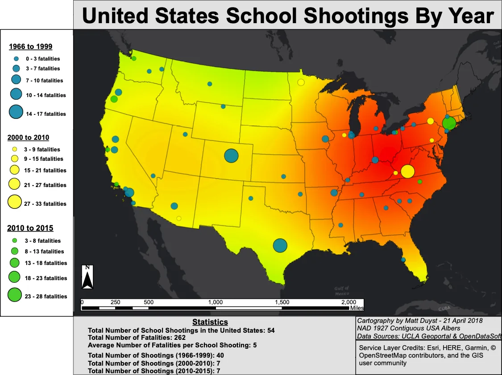
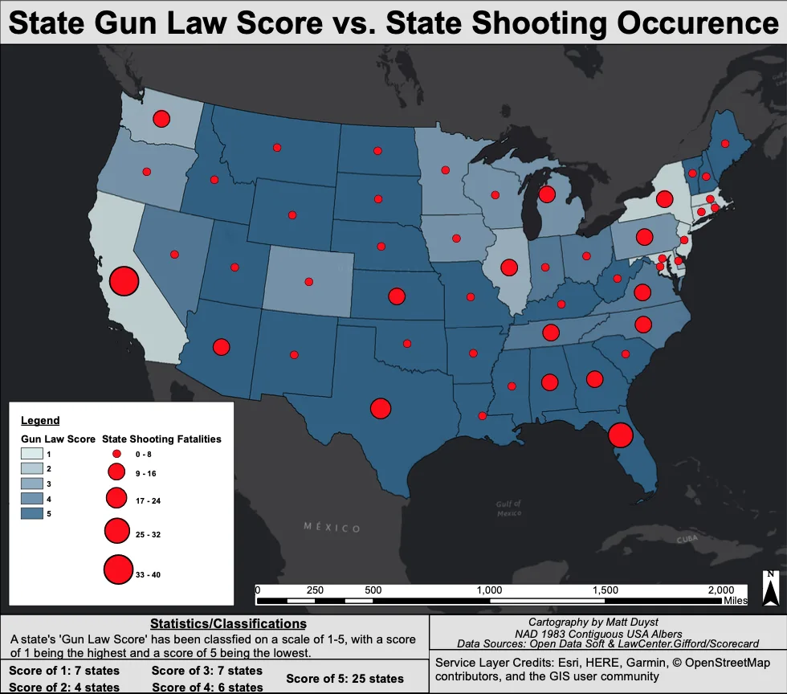
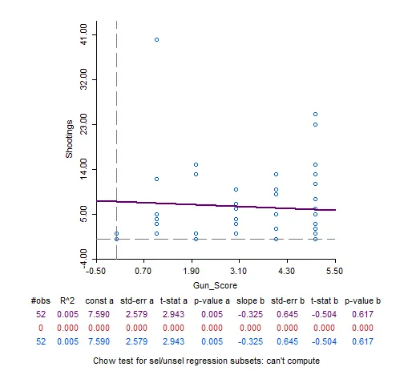

UCLA coursework, 2014 to 2020
US Mass Shootings: Forces of Prediction, or Varying Inconsistencies?
Abstract:
The purpose of this project is to investigate the regularity and development of a national concern at large: Mass Shootings. Mass shootings are defined as shootings with 3 or more casualties, not including the shooter. This report will analyze the emergence of mass shootings in the United States — beginning with the first reported mass shooting in 1966 — to create a streamlined sequence of the progression of mass shootings. With a palpable timeline created, classifications of patterns or inconsistencies surrounding a periodically deconstructed set of mass shootings emerges to the surface. The varying degrees of facets entwined in mass shootings (predominately the characteristics of each shooter), coupled with the physical distribution of each recorded mass shooting in the United States, allows for a scale of predictability of shooting likeliness to further transpire. Because mass shootings entail a broad spectrum of place occurrence — such as residential neighborhoods, places of worship, government facilities, etc. — I decided to further focus on a nuanced component of contemporary concern: School Shootings. By cross-referencing the distribution of school shootings to mass shootings in the United States, this time with periodically structured dates (pre-2000, 2000 to 2010, and 2010 to 2015), a more precise analysis of shooting occurrence is achieved. Lastly, this report will take into consideration another contemporary topic under heavy debate: the effectiveness of state gun laws to combat mass shootings. Through the comparison of state shooting frequencies to state rankings in gun laws, yet another understanding of the distribution of mass shootings can be inferred. It should be stated early on that perfectly predicting such sporadic events like mass shootings is nearly impossible. Although density is an effective form of analysis, these shootings are often catalyzed by the offset of a shooter’s mental instability and are thus unpredictable.
Methods:
Map 1 - Total United States Mass Shootings:
With the data now placed in the correct latitudinal and longitudinal locations and projected in a coordinate system that offered a less stressed representation of the United States (NAD 1927 Contiguous USA Albers) to show a better demonstration of mass shooting clusters, graduated symbols were then applied for each shooting. The symbol size ranged from 10 to 30, with the lowest total fatality rate ranked 0 to 7 given a symbol size of 10, and the largest total fatality ranked 27 to 33 given a symbol size of 30. The transparency was set to 15% to allow for all symbols to be seen — 334 mass shootings are displayed as varying sized red symbols on the map, many of which cover one another. A kernel density for total mass shootings was then applied. A color scheme ranging from green to red (green being the lowest density and red being the most concentrated) was used. This raster was clipped to the bounds of a US boundary shapefile (hollow to preserve the raster’s bright color and allow the ESRI Dark Gray Canvas Basemap to contrast in full effect). Because the raster was simply for accentuating the density of mass shootings, I didn’t deem it necessary to include the High to Low values on the map itself. However, for the sake of analysis, the raster had a low value of 0 and a high value of 2.45315. Calculation and summary statistics were used within the attribute table to gather the total number of mass shootings, and total number of fatalities per shooting.
Map 2 - United States School Shootings by Year:
This map was produced following several of the same geoprocessing and overlay techniques as the mass shooting map. However, multiple query builder simulations were used to isolate school shootings, as well as shootings that occurred within the given data parameters I assigned. I then extracted these features from the data layer and added them as new shapefiles. The three-time breakdowns each were assigned a specific coloring (1966 to 1999 in blue, 2000 to 2010 in yellow, and 2010 to 2015 in green), and graduated symbols were applied to each layer to have each point sized to the total fatality rate. I then combined these school shooting data layers into a single layer with the geoprocessing merge technique and created another new shapefile. A kernel density of school shootings within the United States with the same color scheme of green to red was applied to the merged school shooting layer. This allowed for the same illustration of density but showcased a different representation of shootings — this time school related instead of mass shootings as a whole. Because there are less data points (54 school shootings as opposed to 334 mass shootings), there is less of a transition from low to high (green to yellow to red) on the map. Again, because the kernel density was for added for extra attention for density, I didn’t deem showing the raster values necessary on the map. However, for the sake of analysis, the raster had a low value of 0.000501944 and a high value of 0.198501. Calculation and summary statistics were used within the attribute table of each layer to gather the total number of school shootings per timeline, and total number of fatalities per shooting.
Map 3 - State Gun Law Score vs State Shooting Occurrence:
While this map followed the same procedures as the previous two, most of the data was able to come to fruition through the process of adding fields and editing attribute values. I added two fields to the original mass shooting layer: State Gun Law Score, and State Shooting Fatalities. For the state gun law score, I manually reclassified the scores (originally alphabetically A to F) to a score of 1 to 5 (1 representing ‘A’ and 5 representing ‘F’). I merged this newly edited layer to the US boundary layer. To illustrate each state’s gun law ranking, a graduated color scheme was applied for this variable. The reclassified values denoted the range for each state’s extent — a range of 1 being the lightest blue, and a range of 5 being the darkest blue. I exported the layer as a new shapefile and re-uploaded it, this time focusing on state shooting fatalities. I used the same process of graduated symbology (the value being the newly added state shooting field), with a range of 10 to 35. States within the smallest range (0 to 8) were given a symbol size of 10, and states within the largest range (33 to 40) were given a symbol size of 35. The added size allowed for a better visual of state shooting fatality total to be captured.
Geoda - Spatial Autocorrelation:
The use of Geoda was to calculate a sense of spatial autocorrelation between a state’s gun law score, to the amount of shootings that have occurred within each state. To calculate the degree of correlation, I held state shootings as the dependent variable, and state gun law scores as the independent variable, and produced a scatterplot. A negative slope (-0.071) indicated a negative relationship to two variables, and therefor little to no correlation. I used Univariate Local Moran’s 1 and created weights for the states Poly_ID with Queen Contiguity. I set the order of contiguity to 1 and allowed for K-nearest neighbors to be highlighted. Again, using Univariate Local Moran’s 1, I set the first variable X to state gun law score and produced a significance map, cluster map, and Moran scatterplot. This showed which states had clusters, and which were neighborless. Setting 999 permutations, and a significance filter of 0.01, showed the spatial autocorrelation value — in terms of not significant, high-high, low-low, low-high, high-low, and neighborless.
Mapping Mass Shootings Over Time - Do State Gun Laws Matter?

This map illustrates the full summation of mass shootings in the United States, from 1966 to 2015. While a mass shooting is denoted by fatalities greater than 3, I have incorporated all shootings with a total injury status of greater than or equal to 3. However, in an effort to maintain consistency regarding units with the following maps, I calculated statistics for total fatalities of US mass shootings (not including total injuries). By incorporating those injured with those killed, the scope of mass shootings is greatly widened; this is of great significance when predicting the likeliness of a shooting, because tracking attempted mass shootings allows for a future projection of shooting locations. Within 49 years, there have been 334 mass shootings in the United States. Statistically, this would mean on average there have been 7 mass shootings for every given year from 1966 to 2015. Throughout the many 334 mass shootings, a total of 1,352 people have lost their lives — an average of 4 fatalities per mass shooting.
The colored density of the map showcases the intensity of total fatalities per mass shooting: green illustrates the least number of people killed, while yellow to orange denotes a moderate to high fatality recording, and red exemplifying the largest proportion of lives lost. The United States northern and central boundaries — states like Utah, Wyoming, Montana, North and South Dakota — have the lowest recording of mass shootings, and therefore the lowest proportion of stimulated fatalities. This is in stark contrast with the southern states and states governing the nation’s East Coast. States like Tennessee, Georgia, North and South Carolina, Kentucky, Virginia, Indiana, Ohio, Pennsylvania, Delaware, and Maine constitute the highest density of mass shootings in the United States. However, the state of California is the only state on the West Coast with a similar density of mass shootings (predominately the state’s southern border) and stands as an outlier to this southeastern clustering. Blacksburg, Virginia had the highest proportion of total fatalities (33) at Virginia Tech campus in 2007, followed by Newton, Connecticut (28) at the Sandy Hook Elementary School in 2012, and Killeen, Texas (24) at Luby’s California restaurant in 1991. California’s largest mass shooting occurred at a McDonald’s restaurant in San Ysidro in 1984 with 22 fatalities. In terms of bulk mass shooting occurrence, California ranked highest with 40 mass shootings, followed by Texas with 23 and Florida with 25.

This map focuses on a nuanced representation within the grand scheme of mass shootings: School Shootings. I selected school shootings to embody a more specific embodiment of mass shooting patterns, because in a contemporary setting such as 2018, school shootings are thought as rising regularities and normalized occurrences. By deconstructing school shooting incidents into 3 classifications — pre-2000 (1966 to 1999), 2000 to 2010, and 2010 to 2015 — a three-part understanding of school shooting development within the United States is able to be evaluated. Collectively, there have been 54 school shootings within the United states from the parameters of 1966 to 2015. On average, 5 people were killed in every shooting. Over the course of 30 years, from the first school shooting in 1966 to the last school shooting in 1999, there were 54 occurrences. While this chronology is three times the duration of the latter two deconstructions, it had nearly six times the average school shooting rate (40 shootings occurred from 1966 to 1999). Amongst those 54 school shootings, there were a total of 262 fatalities and an average of 5 lives lost per shooting. The most school shootings occurred in the state of California (7), followed by the state of Illinois (3).
The first school shooting at the University of Texas in 1966 denotes the largest shooting within the timeline; 17 individuals were killed. The third largest fatality rate induced by a school shooting occurred 10 years later in 1976 at Cal State Fullerton, where 7 people lost their lives. The second largest school shooting occurred in the last year of the given parameters (1999), in Littleton, Colorado at Columbine High School, where 14 people were tragically killed. Over the course of the next 10 years (between 2000 to 2010), there were 7 incidents. Between 2000 to 2010, there were 76 total fatalities stimulated by school shootings, with an average of 11 fatalities per shooting. The largest fatality rates were among the years 2005, 2007, and 2009. In 2005, in Red Lake, Minnesota, 10 people were killed at Red Lake High School. Two years later (2007), the largest school shooting within the timeline — and the largest school shooting in US history — occurred in Blacksburg, Virginia with a record high fatality rate of 33 lives lost at Virginia Tech. Just another two years later (2009), the second largest school shooting within the United States went underway: 14 people were killed in Binghamton, New York. The shortest and most contemporary timeline (between 2010 and 2015), followed the same trajectory of total school shootings as 2000 to 2010 with 7 incidents. However, there were 13 fewer total fatalities (63), and a lower average fertility of 9 lives lost per shooting. The first school shooting within this timeline was in Oakland, California (2012) at Oikos University with 7 fatalities. The largest school shooting between 2010 and 2015 was in the same year (2012) in Newton, Connecticut at Sandy Hook Elementary School; a total of 28 children and faculty members lost their lives. The next largest school shooting occurred 3 years later in Roseburg, Oregon (2015) at Umpqua Community College, where 10 fatalities were catalyzed by a school shooting.
Out of the total 334 mass shootings that have occurred in the United States, 6% of these were school shootings (54). While focusing on a nuanced category like school shootings offers a new perspective on patterns of distribution, it still falls under the same umbrella of mass shootings and therefore is just as volatile in terms of prediction. As illustrated on the map, the distribution of school shootings is pretty balanced, with much fewer concentrations of clusters like that of total United States mass shootings (map 1). However, the largest fatality rates caused by school shootings does follow the mass shooting generalization of targeting states near the East Coast (highlighted in red), where upwards of 30 school shootings have taken place. While school shootings are becoming thought of as rising trends of regularity, it actually appears quite the opposite; over the last 20 years there were a total of 14 school shootings where an individual was killed. This is in stark contrast to the 40 school shootings between the years 1966 to 1999.

Categorizing states by their gun law score, in comparison to each state’s total fatality rate from mass shootings, allows for a range of law effectiveness to merge at a national level. A state’s gun law score is classified on a scale from A to F, with a score of 'A' being the highest and a score of F being the lowest. I re-classified these as scores of 1 (A) to 5 (F). Exactly half of the United States ranked the lowest possible score of 5 (25 states). Tennessee, Virginia, Indiana, North Carolina, Ohio, and Nevada (6 states) scored a ranking of 4. Minnesota, Iowa, Michigan, Oregon, Wisconsin, Colorado, and Pennsylvania (7 states) scored a ranking of 3. Delaware, Illinois, Rhode Island, and Washington (4 states) scored a ranking of 2. California, the District of Columbia, Maryland, New York, Massachusetts, Connecticut, and New Jersey (7 states) are ranked with the highest possible gun law score of 1. These gun law classifications are illustrated by varying shades of blue on the map — with the lightest blue representing the highest ranking, and the darkest shade of blue denoting the lowest ranking. The analysis of mass shootings was discussed extensively in map 1; however, whereas the first map of United States mass shootings simply showcases the total number of shootings and their given location, this map illustrates the total volume of mass shootings for each state by fatality rate. Each state’s fatality rate is represented by a red symbol of varying sizes; the larger the red symbol, the higher the proportion of lives lost to mass shootings. The bulk quantity of states (36) have experienced fewer than 8 total fatalities from mass shootings. A total of 12 states have experienced between 9 to 16 total fatalities from mass shootings. It makes sense that the top three states with the highest proportion of mass shooting (Texas, Florida, and California), would also have the largest proportion of total fatalities. Texas has experienced 23 total fatalities (falling within the range of 17 to 24 on the map), just one fatality rate higher than Florida (25), falling within the range of 25 to 32 on the map. California has experienced the most causalities from mass shootings (40), falling within the range of 33 to 40 on the map and having the largest red dot. This map allows for highly debated controversies over gun laws to emerge. For instance, California is classified as having one the strictest gun law scores (1), and yet has the highest total fatality rate from mass shootings than any other state in the US. New York also received a gun law score of 1, and yet has a total of 12 fatalities induced from mass shootings — just one less fatality than states like Kansas and Arizona, both of which are classified by the lowest gun law ranking of 5. Similarly, the state of Washington is characterized by a gun law ranking of 2, and yet has the same proportion of total fatalities from mass shootings (15) as the state of Georgia, which has a ranking of 5. This analysis leads to believe that a state’s degree of gun law ranking appears to have little correlation with total fatality rate from a mass shooting.
Geoda: State Shooting Occurrence vs. Gun Law Score

In order to verify this lack of correlation, a statistical analysis between a state’s gun law score and the total fatalities induced by mass shootings was needed. The state’s gun law scores were held as the independent variable, and the number of mass shootings within each state were held as the dependent variable. With the given scatterplot, the slope b (correlation coefficient) illustrates a negative relationship (-0.071) between the two variables. To put this in terms of representation on the entire United States, a significance filter of 0.1 was applied, and clusters with rankings of 0 to 5 for each state’s gun law ranking were achieved. A total of 40 states received a cluster ranking of not significant, showing little to no positive spatial autocorrelation.